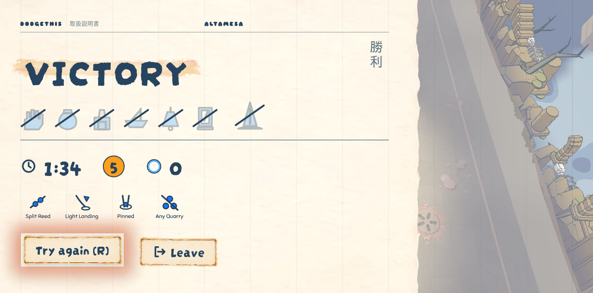

A run ending you can feel
To review · 2026-10-31 · thr_zm85j29jxx
Is this the end of an Altamesa run: a quiet beat after Gnomon falls, then the Wardens struck through, time, level, deaths and your talents, with Try again or Leave?

To review · 2026-10-31 · thr_zm85j29jxx
Is this the end of an Altamesa run: a quiet beat after Gnomon falls, then the Wardens struck through, time, level, deaths and your talents, with Try again or Leave?
